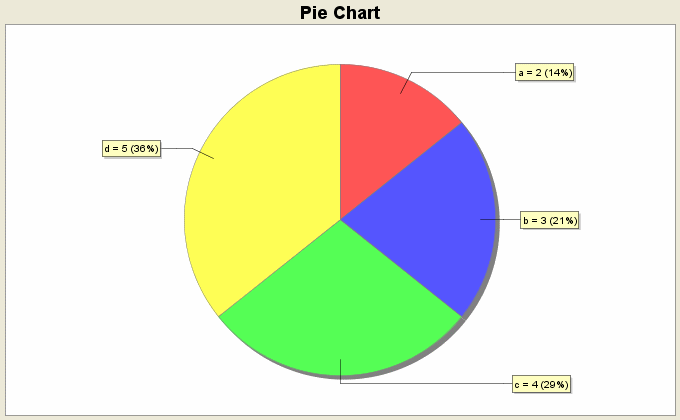

Graph > Pie Chart
A pie chart is a circular chart divided into
sectors that show relative frequencies of different
categories represented.

To create a pie chart, use the following steps:
- If summary data of the categories and their
corresponding frequencies are present in the
Datasheet, select Summary Data from Datasheet.
Select the column containing categories in the
Categories: drop-down menu.
Select the column containing the respective frequencies
in the Frequencies" drop-down menu.
- If data values are entered in a single column
in the Datasheet, select Data Values from Datasheet.
In the Data: drop-down menu, select the column
containing data values.
- Enter the chart title in the Chart Title:
text field.
- To sort the pie sectors by categories, select
Sort by Categories. To sort by frequencies,
select Sort by Frequencies. The sectors
are displayed clockwise in an ascending order.
- To display legends, select the Show Legends
check box.
- To display values/percentages for each pie sector,
select Show Values/Percentages for each Pie Sector.
- Click OK to create the pie chart.